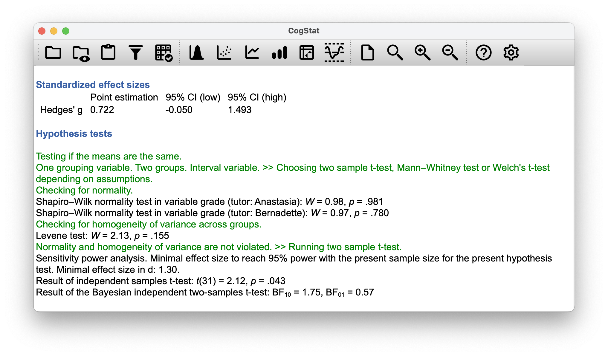

Chapter 16 Bayesian hypothesis tests
Chapter 9 describes the orthodox approach to hypothesis testing. It took an entire chapter to describe because null hypothesis testing is a very elaborate contraption that people find very hard to make sense of.
In contrast, the Bayesian approach to hypothesis testing is straightforward. Let us pick a setting that is closely analogous to the orthodox scenario. We want to compare two hypotheses: a null hypothesis \(h_0\) and an alternative hypothesis \(h_1\). Before running the experiment, we have some beliefs (\(P(h)\)) about which hypotheses are true. We run an experiment and obtain data \(d\). Unlike frequentist statistics, Bayesian statistics does allow talking about the probability that the null hypothesis is true. Better yet, it allows us to calculate the posterior probability of the null hypothesis, using Bayes’ rule:
\[ P(h_0 | d) = \frac{P(d|h_0) P(h_0)}{P(d)} \]
This formula tells us exactly how much belief we should have in the null hypothesis after observing the data \(d\). Similarly, we can work out how much belief to place in the alternative hypothesis using the same equation. All we do is change the subscript:
\[ P(h_1 | d) = \frac{P(d|h_1) P(h_1)}{P(d)} \]
16.1 The Bayes factor
In practice, most Bayesian data analysts tend not to talk about the raw posterior probabilities \(P(h_0|d)\) and \(P(h_1|d)\). Instead, we tend to talk in terms of the posterior odds ratio. Think of it like betting.
Suppose, for instance, the posterior probability of the null hypothesis is 25%, and the posterior probability of the alternative is 75%. The alternative hypothesis is three times as probable as the null, so we say that the odds are 3:1 in favour of the alternative. Mathematically, all we have to do to calculate the posterior odds is divide one posterior probability by the other:
\[ \frac{P(h_1 | d)}{P(h_0 | d)} = \frac{0.75}{0.25} = 3 \]
Or, to write the same thing in terms of the equations above: \[ \frac{P(h_1 | d)}{P(h_0 | d)} = \frac{P(d|h_1)}{P(d|h_0)} \times \frac{P(h_1)}{P(h_0)} \]
This equation is worth expanding on. There are three different terms here that you should know. On the left-hand side, we have the posterior odds, which tells you what you believe about the relative plausibility of the null hypothesis and the alternative hypothesis after seeing the data. On the right-hand side, we have the prior odds, which indicates what you thought before seeing the data. In the middle, we have the Bayes factor, which describes the amount of evidence provided by the data: \[ \begin{array}{ccccc}\displaystyle \frac{P(h_1 | d)}{P(h_0 | d)} &=& \displaystyle\frac{P(d|h_1)}{P(d|h_0)} &\times& \displaystyle\frac{P(h_1)}{P(h_0)} \\[6pt] \\[-2pt] \uparrow && \uparrow && \uparrow \\[6pt] \mbox{Posterior odds} && \mbox{Bayes factor} && \mbox{Prior odds} \end{array} \]
The Bayes factor (abbreviated as BF) has a special place in Bayesian hypothesis testing because it serves a similar role to the \(p\)-value in orthodox hypothesis testing: it quantifies the strength of evidence provided by the data. As such, it is the Bayes factor that people tend to report when running a Bayesian hypothesis test.
The reason for reporting Bayes factors rather than posterior odds is that different researchers will have different priors. Some people might have a strong bias to believe the null hypothesis is true; others might have a strong bias to believe it is false. Because of this, the polite thing for an applied researcher to do is to report the Bayes factor. That way, anyone reading the paper can multiply the Bayes factor by their own personal prior odds, and they can work out for themselves what the posterior odds would be. In any case, by convention, we pretend that we give equal consideration to both the null hypothesis and the alternative, in which case the prior odds equal 1, and the posterior odds become the same as the Bayes factor.
16.2 Interpreting Bayes factors
One of the nice things about the Bayes factor is that the numbers are inherently meaningful. An experiment with a Bayes factor of 4 corresponds to betting odds of 4:1 in favour of the alternative. However, some have attempted to quantify the standards of evidence that would be considered meaningful in a scientific context. The two most widely used are Jeffreys (1961) and Kass & Raftery (1995). Of the two, Kass & Raftery (1995) is somewhat more conservative.
| Bayes factor | Interpretation |
|---|---|
| 1 - 3 | Negligible evidence |
| 3 - 20 | Positive evidence |
| 20 - 150 | Strong evidence |
| \(>\) 150 | Very strong evidence |
| Bayes factor \(BF_10\) | Interpretation |
|---|---|
| \(>\) 100 | Extreme evidence for \(h_1\) |
| 30 - 100 | Very strong evidence for \(h_1\) |
| 10 - 30 | Strong evidence for \(h_1\) |
| 3 - 10 | Moderate evidence for \(h_1\) |
| 1 - 3 | Anecdotal evidence for \(h_1\) |
| 1 | No evidence for \(h_1\) |
| 1/3 - 1 | Anecdotal evidence for \(h_0\) |
| 1/10 - 1/3 | Moderate evidence for \(h_0\) |
| 1/30 - 1/10 | Strong evidence for \(h_0\) |
| 1/100 - 1/30 | Very strong evidence for \(h_0\) |
| \(<\) 1/100 | Extreme evidence for \(h_0\) |
There are no hard and fast rules here: what counts as strong or weak evidence depends entirely on how conservative you are and upon the standards that your community insists upon before it is willing to label a finding as “true”.
In any case, note that all the numbers listed above make sense if the Bayes factor is greater than 1 (i.e. the evidence favours the alternative hypothesis). However, one important practical advantage of the Bayesian approach relative to the frequentist approach is that it also allows for quantifying evidence for the null. When that happens, the Bayes factor will be less than 1. You can choose to report a Bayes factor of less than 1, but it might be confusing for some.
For example, suppose that the likelihood of the data under the null hypothesis \(P(d|h_0)\) is equal to 0.2, and the corresponding likelihood \(P(d|h_0)\) under the alternative hypothesis is 0.1. Using the equations given above, the Bayes factor here would be:
\[ \mbox{BF} = \frac{P(d|h_1)}{P(d|h_0)} = \frac{0.1}{0.2} = 0.5 \]
This result tells that the evidence in favour of the alternative is 0.5 to 1. For some, it makes a lot more sense to turn the equation “upside down” and report the amount of evidence in favour of the null. In other words, what we calculate is this:
\[ \mbox{BF}^\prime = \frac{P(d|h_0)}{P(d|h_1)} = \frac{0.2}{0.1} = 2 \]
We would report a Bayes factor of 2:1 in favour of the null. Much easier to understand, and you can interpret this using the table above.
A few words on notation: the Bayes factor is often written as \(BF_{10}\), where the subscript indicates that we are giving evidence for \(h_1\) over \(h_0\). When noted as \(BF_{01}\), however, it is the other way around. Always be mindful which statistic you are reporting, and make sure you are consistent in your notation.
No need to worry too much though, because \[ \mbox{BF}_{10} = \frac{1}{\mbox{BF}_{01}} \]
16.3 Bayesian statistics in CogStat
Bayesian hypothesis testing is a new feature since CogStat 2.3. You might have already noticed the results of Bayesian hypothesis tests in the output of CogStat in some screenshots. Let us revisit some of our examples from earlier chapters.
16.3.1 One-sample \(t\)-test
You might recall Dr Zeppo’s psychology students and their grades from Chapter 11.2. The file was called zeppo.csv. Let us load it again to CogStat, and let’s use the function Explore variable, and let us use our last null hypothesis of \(67.5\) as the population standard deviation (fill in 67.5 in the dialog box’s Central tendency test value). The results were:
Hypothesis tests
Testing if mean deviates from the value 67.5.
Interval variable. >> Choosing one-sample t-test or Wilcoxon signed-rank test depending on the assumption.
Checking for normality.
Shapiro-Wilk normality test in variable x: W = 0.96, p = .586
Normality is not violated. >> Running one-sample t-test.
Sensitivity power analysis. Minimal effect size to reach 95% power with the present sample size for the present hypothesis test. Minimal effect size in d: 0.85.
One sample t-test against 67.5: t(19) = 2.25, p = .036
Result of the Bayesian one sample t-test: BF10 = 1.80, BF01 = 0.56
While the one-sample \(t\)-test statistic was significant, the Bayes factor (\(BF_10\)) was 1.80:1 in favour of the alternative, which is not very strong evidence by any of the guidances. So we should not be able to reject the null hypothesis. So what we would write up is:
With a mean grade of 72.3, the psychology students scored slightly higher than the average grade of 67.5 but there is no statistical evidence for a difference (\(BF_{10} = 1.80\)).
16.3.2 Independent samples \(t\)-test
Let’s load the file harpo.csv, where we see the grades for Dr Harpo’s lectures with the two tutors for the class (Anastasia and Bernadette). We’ll use the Compare groups functions with grades in the Dependent variable(s) box and tutor in the Group(s) box. The results were:

And again, with a bayesian approach, there is not much evidence of significant difference.
The mean grade in Anastasia’s class was 74.5 (SD = 8.7), whereas the mean in Bernadette’s class was 69.1 (SD = 5.6). A Student’s independent samples \(t\)-test showed that this 5.5 difference was significant (\(t(31) = 2.12\), \(p<.05\), \(CI_{95} = [0.2, 10.8]\)), suggesting that a genuine difference in learning outcomes has occurred. However, the Bayes factor (\(BF_{10} = 1.75\)) is not strong enough to reject the null hypothesis, so we cannot conclude that the difference is real.
16.3.3 ANOVA
Let’s jump back to our clinical trial from Chapter 12: clinicaltrial.csv. Let’s put therapy in the Dependent variable(s) box and mood_gain in the Group(s) box in the Compare groups function. The results were given:
Result of the Bayesian independent two-samples t-test: BF10 = 1.75, BF01 = 0.57
You’ll notice that when running the same exercise with drug instead of therapy, there is no Bayes factor in the results. Bayesian statistics is not yet implemented for ANOVA (more than two groups or more than one grouping variables).
16.3.4 Linear regression
Let’s use our parenthood.csv file, and let’s use the Explore relation of variable pair function with parentgrump and parentsleep. The results are staggering:
Pearson's correlation: r(98) = -0.90, p < .001
Bayes Factor for Pearson correlation: BF10 = 25912605631674947492297885431627776.00, BF01 = 0.00
As you see, the Pearson’s correlation is \(-0.90\) with a \(p < .001\). An \(r\) value close to 1 is already very strong (particularly with a significant \(p\)-value), but that’s a frequentist statistic. The Bayes factor of \(BF_{10} = 2.59 \times 10^{28}\):1 in favour of the alternative is a very strong evidence. And the inverted notation \(BF_{01} = 0.00\) also speaks volumes. So we have no doubt that there is a strong correlation between the two variables.